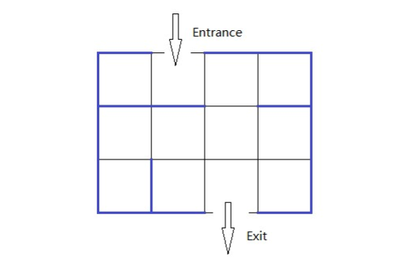

★实验任务
NC一天要去走一个迷宫，迷宫是由一个 R*C的网格表示。迷宫只有一个出口和一个入口，这个大家都知道。迷宫的出口在第一行，出口在最底行。他想知道走出迷宫的最短时间。这是一个很简单的问题，至于你信不信，反正我是信了。

★数据输入
输入第一行包括四个正整数 R，C，ENT,EXIT（2<=R<=200，2<=C<=200），表示 R 行,C列,入口在第ENT列,出口在EXIT列。
接下 2*R-1行，第2*i行有 C-1个数，第j个数表示网格 g[i][j] 与 g[i][j+1] 之间有墙壁。第 2*i+1 行有 C 个数，第 j 个数表示网格 g[i][j] 和 g[i+1][j] 之间有墙壁。‘0＇表示没有墙壁，‘1’表示两个位置之间有墙壁。
★数据输出
如有有路径走出，则输出最短的步数，否则输出“No Way”(没有引号)。
#include<iostream> #include<queue> using namespace std; bool vis[203][203]; struct node{ int x,y,step; }; int n,m,s,e; int dx[5]={1,-1,0,0}; int dy[5]={0,0,1,-1}; int row[202][202][202]; int col[202][202][202]; int bfs() { queue<node>q; node p; p.x=1;p.y=s;p.step=1; q.push(p); vis[p.x][p.y]=1; while(q.size()) { node top=q.front(); q.pop(); int tx=top.x; int ty=top.y; int ts=top.step; if(tx==n&&ty==e) { return (ts+1); } for(int i=0;i<=1;i++)//列走 { int xx=tx+dx[i]; int yy=ty+dy[i]; int ss=ts+1; if(xx>n||xx<1||yy>m||yy<1||vis[xx][yy]==1||col[tx][xx][yy]==1) continue; else { node tmp; tmp.x=xx;tmp.y=yy;tmp.step=ss; q.push(tmp); vis[xx][yy]=1; } } for(int i=2;i<=3;i++)//行走 { int xx=tx+dx[i]; int yy=ty+dy[i]; int ss=ts+1; if(xx>n||xx<1||yy>m||yy<1||vis[xx][yy]==1||row[xx][ty][yy]==1) continue; else { node tmp; tmp.x=xx;tmp.y=yy;tmp.step=ss; q.push(tmp); vis[xx][yy]=1; } } } return 0; } int main() { ios::sync_with_stdio(0); cin.tie(0); cout.tie(0); cin>>n>>m>>s>>e; int x; for(int i=1;i<=n;i++) { for(int j=1;j<=m-1;j++) { cin>>x;//第i行第j列到第j+1列能不能走 row[i][j][j+1]=row[i][j+1][j]=x; } if(i!=n) for(int j=1;j<=m;j++) { cin>>x;//第i列到第i+1列第j个格子能不能走 col[i][i+1][j]=col[i+1][i][j]=x; } } int k=bfs(); if(k) cout<<k; else cout<<"No Way"； }
成长从现在开始